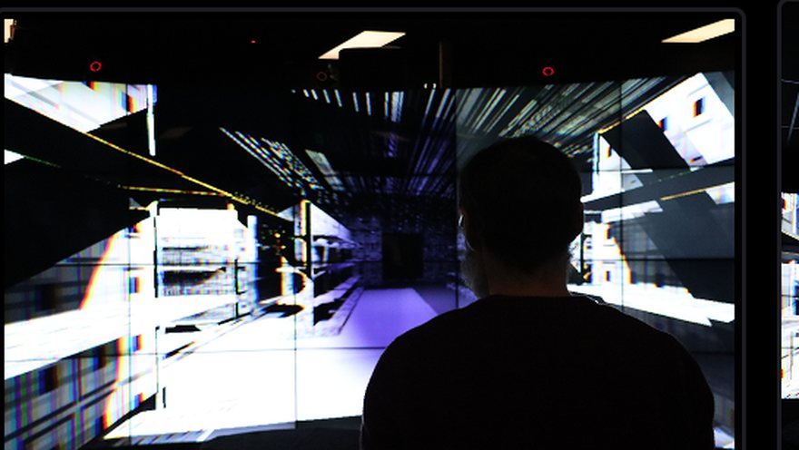
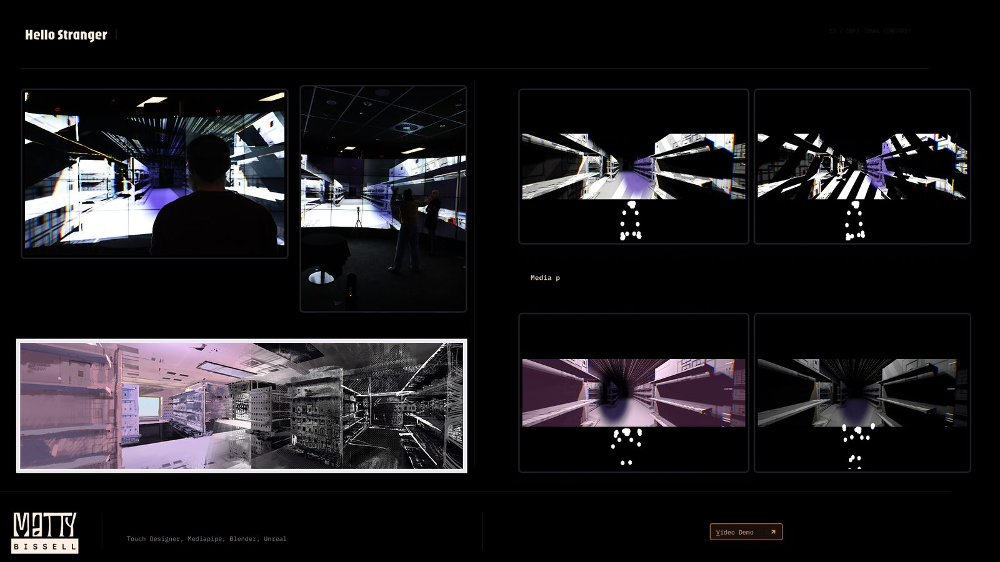
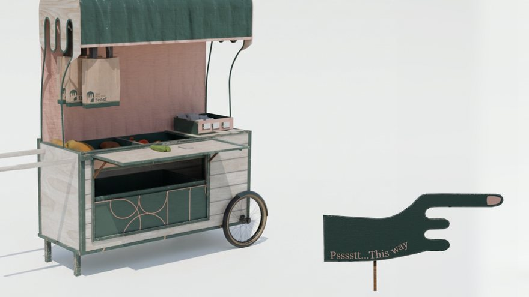
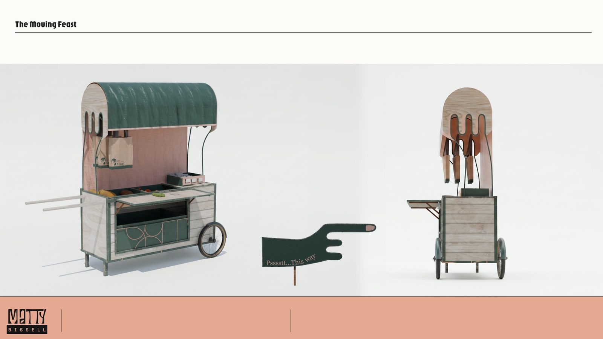
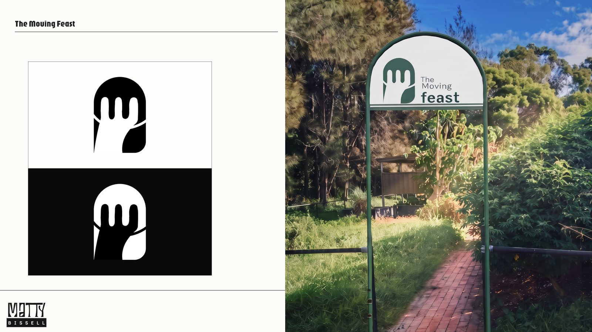
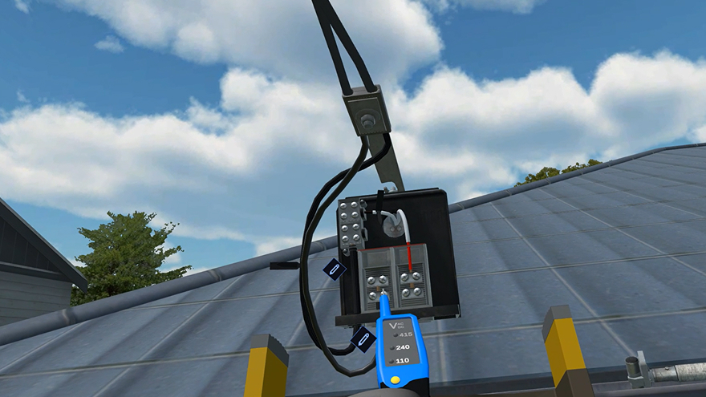
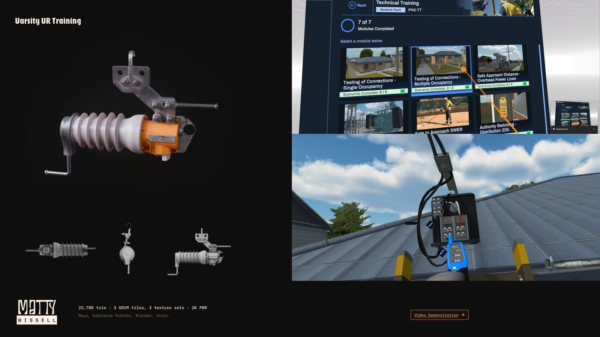
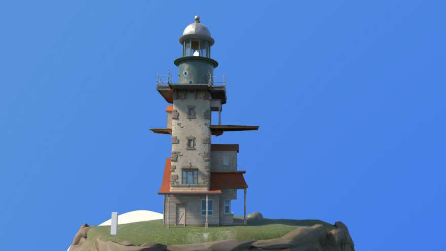
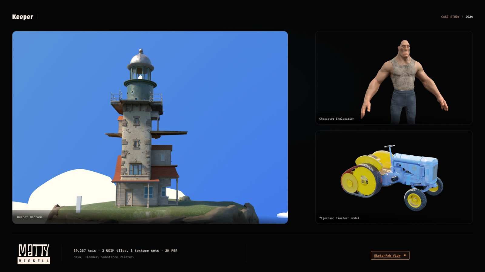

Selected work
Interactions
A presence-responsive creature-weed on a gallery monitor. MediaPipe pose data runs through TouchDesigner into Unreal Engine 5, so the plant answers to where you stand and how you move. There is no correct input. It opens for people who stay with it.
The creature at the top of this page is the piece, rebuilt for the web from the same Blender rig. The installation ran on a 55-inch monitor in a shared gallery room, driven live by pose tracking. The whole build is written up in the process journal.
Cut, chop, glue, sew, grow, grow, grow … pop. Take flight.
In progress. The full piece lands here when it is cut.

A real-time piece that puts you inside a supermarket where the sound and the space turn hostile under a freeze response. Social anxiety in a non-place, and the work Fiddlearm grew out of.


A rebrand for the tucked-away community garden at Sippy Downs, reimagined as a mobile food service. One design system carried from the mark and signage through to 3D prototypes.



Technical training modules for electrical distribution work. Switchgear, test equipment and field environments authored and optimised for real-time VR delivery across seven module packs.


A lighthouse diorama with character and vehicle studies alongside it. Self-directed, full pipeline from block-out through to 2K PBR across three UDIM tiles.

Sketchfab viewMotion-activated display and virtual airport built with a team for Whitsunday Coast Airport.
About
Me
I'm a dad who ended up in tech by way of a lot of other jobs. Two decades of digital art behind me, most of it spent on things people have to use rather than look at, and now a Bachelor of Design at UniSC majoring in Interactive Media.
The last stretch was immersive training at Bondi Labs and Powercor. Switchgear, test equipment and field environments rebuilt in 3D so the dangerous parts of electrical distribution work could be rehearsed before anyone met them for real. Some of those assets existed only to generate synthetic training data for AI inspection models, which taught me what it means to build for a machine's eye rather than a person's.
Somewhere in all that I got more interested in why a thing gets built than in what it turns out to be. The work I want to do now puts something human back into non-places: the supermarket, the airport, the rooms people move through without ever being asked anything. Technology is only worth much here if it becomes culture people actually share.
Creative collaboration is the part I'm chasing. I'd rather make something with people than for them.
Get in touch